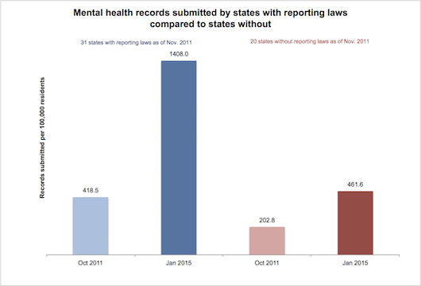
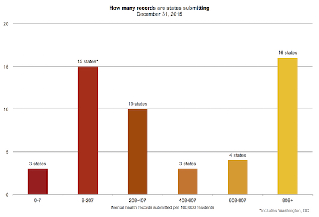

This is the Infographic Title
Give the user context or a set of instructions, e.g. “Select a permit standard or click on a state below to begin.”
Legends
Every day, 31 Americans are murdered and 56 people kill themselves with guns. Too often, the people pulling the trigger were able to arm themselves because of gaps in our background check system.
We can only stop people with dangerous mental illness from buying guns if every gun sale includes a background check. And those background checks will only be effective if states submit the hundreds of thousands of mental health records still missing from the system. Every missing record is another tragedy waiting to happen.
More on the Issue

How can states do better?
Closing fatal gaps in the National Instant Criminal Background Check System (NICS) requires leadership. States face numerous obstacles to submitting records to the background check system—from legal to fiscal to technological—and no single solution can improve record-sharing in all states. But if there is an essential ingredient, it is leadership from the top. When governors and state legislators are committed to ensuring that all of their states’ records are submitted to the background check system, there are several steps they can take to accomplish this.
State Reporting Laws. States that have laws or policies that explicitly require or permit state agencies to share relevant mental health records with the NICS database submit records at much higher rates. Of the ten states reporting the highest number of records per 100,000 residents, nine had enacted state laws as of November 2011 specifically authorizing the state police, courts, or other agencies to share relevant mental health records with NICS. In contrast, among the bottom ten states, only one had such a law in place. States with reporting laws as of November 2011 added four times more records over the next three years than did states without them.
Improving Laws Already on the Books. States with laws already in place may still be able to strengthen them. The most effective laws go beyond merely allowing record reporting to require it. They require that all prohibiting mental health records be reported, including older records created before the law went into effect. And they require that reporting happen promptly after a person is found to be mentally ill.
Federal NARIP Grants. In 2008, Congress passed the NICS Act Record Improvement Program (NARIP) to provide grants to states for improving their infrastructure for collecting and submitting relevant records to NICS. Twenty-eight states have received grants since the program began. The states that sought and received NARIP grants were more likely to make significant improvements in their record-sharing in subsequent years. Of the top 10 states, 6 (60%) received NARIP funding between 2009 and 2015. In contrast, only 3 of the 10 poorest performing states (30%) received NARIP grants during that period.
Our methodology
The sixteen states that have submitted the most mental health records to the National Instant Criminal Background Check System (NICS), when controlling for population, have all submitted over 808 records per 100,000 residents. These states, in descending order, are Pennsylvania, New Jersey, Virginia, Delaware, New York, California, Washington, South Carolina, Nebraska, Michigan, North Carolina, Iowa, Colorado, Texas, West Virginia, and Minnesota. At the other end of the spectrum, three states have submitted fewer than 8 records per 100,000 residents — less than one-hundredth the rate of the best-performing states.
To evaluate a state’s performance, it is necessary to estimate how many records it needs to submit to NICS. Some states have estimated the total number of mental health records in their possession, but these estimates are thought to be highly inaccurate. The nonpartisan Government Accountability Office concluded that they could not serve as a benchmark for state performance.
Therefore, we assess each state's performance by comparing it with the performance of other states after controlling for population. The map shows how many mental health records each state needs to submit to match the performance of the ten best-performing states.
Data
The FBI provided the number of mental health records submitted by each state as of December 31, 2015. This is an update of the analysis published by Everytown for Gun Safety in the report Closing the Gaps, which relied on data from November 2013. A previous report by Mayors Against Illegal Guns, Fatal Gaps: How Missing Records in the Federal Background Check System Put Guns in the Hands of Killers, analyzed data that was current at its time of publication in November 2011.
The FBI publishes a monthly report of the number of background checks each state initiates through the National Instant Criminal Background Check System. Background checks are conducted when a firearm is purchased from a federally licensed firearms dealer, when a firearm is redeemed from a pawnshop, and when an individual applies for a concealed weapons permit, among other circumstances.